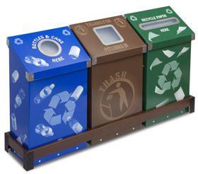
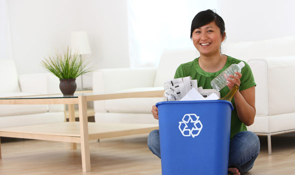

Every three months, Americans throw enough aluminum in the landfills to
build our nation's entire commercial air fleet.
More than 28 billion glass bottles and jars end up in landfills every year -- that
is the equivalent of filling up two Empire State Buildings every three weeks.


What Goes in Each Bin
| Blue |
Brown |
Green or Grey |
- Paper - magazines, newspapers, envelopes, phonebooks
- Cardboard
- Aerosols
- Drink cans and cartons
- Glass bottles and jars - No other glass
- Plastic bottles
- Plastic food trays
|
- Plate scrapings
- Vegetable peels
- Meat and bones
- Egg shells
- Teabags and coffee grounds
- Garden waste - cut flowaer, grass cuttings, leaves
- Food waste can be wrapped with newspaper
|
- General trash and pet waste
- Plastic bags
- Lightbulbs - no fluorescent bulbs
- Glassware - dishes, mirrors
- Sanitary products
|
What Can't Go In Each Bin
| Blue |
Brown |
Green or Grey |
- Plastic bags
- Plastic wrap or film
- Aerosols
- Drink cans and cartons
- Glass bottles and jars - No other glass
- Plastic bottles
- Plastic food trays
|
- Plate scrapings
- Vegetable peels
- Meat and bones
- Egg shells
- Teabags and coffee grounds
- Garden waste - cut flowaer, grass cuttings, leaves
- Food waste can be wrapped with newspaper
|
- General trash and pet waste
- Plastic bags
- Lightbulbs - no fluorescent bulbs
- Glassware - dishes, mirrors
- Sanitary products
|
What Can't Be Recycled
| Pizza Boxes | Wet Paper | Plastic Bottle Caps |
| Juice Boxes | Plastic Bags | Styrofoam |
| Wire Hangers | Ceramics | Heavily-Dyed Paper |